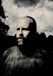
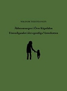

Sten Niclas Birger Lundkvist
Svensk författare och översättare.
| Född: | 1964-10-27 Kåge, Kågedalens fs, Skellefteå kn. [1] |
|---|
| Levde: | 1971 Postlåda 656, Kåge, Kågedalens fs, Skellefteå kn. [1] |
|---|
| Levde: | 1991 Hedensbyn 13:48, Kvistg 153, Skellefteå, Skellefteå lfs, Skellefteå kn. [2] |
|---|
| Levde Gift: | 2012. [3] |
|---|
Noteringar
Niclas Lundkviswt även känd under pseudonymen Nikanor Teratologen, är en svensk författare och översättare.
BIOGRAFI
Lundkvist är uppvuxen i Kåge och gick högstadiet på Norrhammarskolan i Skellefteå. Därefter fortsatte han på gymnasiet vid Kaplanskolan i samma stad. Det är känt att han har läst en A-kurs i historia vid Umeå universitet och senare hoppat av B-kursen efter att ha lagt fram en uppsats om andra världskrigets utbrott, samt att han runt 1992 varit student vid Lunds universitet.
Debut
Äldreomsorgen i Övre Kågedalen är Niclas Lundkvists debutroman, under pseudonymen Nikanor Teratologen. Den kom ut 1992 på Norstedts förlag och har sedan återutgivits på Carl-Michael Edenborgs förlag Vertigo i en något redigerad variant. Berättelsen skall föreställa den elvaårige Helge Holmlunds redogörelse för sin uppväxt i Kågedalen i norra Västerbotten. Han ingår i en incestuös kärleksrelation med sin morfar och de fördriver tiden med mord, våldtäkter, filosofiska samtal och fylla. Boken innehåller mängder av extrema historier kring detta. Språket är dialektal nordvästerbottniska, Skelleftebondska, och ordförklaringar återfinns längst bak i boken. Författaren och litteraturvetaren Carl-Göran Ekerwald har skrivit ett efterord i Vertigos utgåva.
Manuskriptet hade inskickats till Nordstedts förlag där det lästs av Erland Törngren och antagits för utgivning av en enig förlagsgrupp. Första upplagan var på 6.000 exemplar, en relativt hög upplaga för en debutant. Trots detta utgavs ingen pocketupplaga, och förlaget refuserade uppföljaren Förensligandet i det egentliga Västerbotten. Lundkvist kontaktade då Carl-Michael Edenborg på Vertigo förlag, som refuserade boken främst för att förlaget då fokuserade på erotisk litteratur. Denne övertalades dock av sin dåvarande partner Gabriella Håkansson att trots allt ge ut Förensligandet, varvid även en ny pocketupplaga av Äldreomsorgen trycktes i 12.000 exemplar. Edenborg berättar att böckerna till en början var svårsålda, men att ett nyvaknat intresse runt 2005-2006 gjorde att upplagan plötsligt sålde slut på kort tid, och böckerna betingar numera (2012) ett högt pris på landets antikvariat. Sommaren 2012 utgavs en jubiléumsupplaga sambunden med Förensligandet och den totala upplagan är nu 20.000 exemplar.
Att boken publicerades anonymt fick kritikerna att spekulera i vem som låg bakom den. I Dagens Nyheter trodde litteraturkritikern Leif Nylén att Lars-Olof Bengtson eller P. O. Enquist fanns bakom signaturen Nikanor Teratologen. Nylén frågade sig om något renommerat svenskt förlag någonsin gett ut en mer osmaklig eller vidrigare bok och ansåg att den mekaniska homosexualiteten och den hatiska kvinnofientligheten till slut blev alltför tröttande . Norrköpings Tidningar ansåg Ola Gustafsson att romanen var det sämsta debutantverket från ett ansett förlag på åtskilliga år: "Det har överhuvudtaget inget med skönlitteratur att skaffa och däri har det - möjligen - en styrka." Magnus Brohult i Svenska Dagbladet såg likheter med författare som Stig Larsson och Magnus Dahlström.
Äldreomsorgen i Övre Kågedalen har blivit en radiopjäs, Ur djupet av en massakrerad ömtålighet, av Britt Edwall. Morfar spelades av Ernst Günther och Örjan Ramberg spelade Helge.
Litterär stil
Författarskapet under pseudonymen Nikanor Teratologens verk präglas av skabrösa överdrifter av sexuell natur, vilket föranlett Mattias Fyhr att benämna den som gotisk black metal . "Nikanor" är ett mansnamn som betyder segrare på grekiska och "Teratologen" kommer från grekiskan, vilket under den grekiska antiken var en som berättade om järtecken och förunderliga ting. Teratologi är läran om missbildningar, framför allt under den embryonala utvecklingen. Förutom ett direkt inflytande från skräckklassiker som H. P. Lovecraft och erotisk litteratur i stil med Marquis de Sade kan man hos Lundkvist finna ett stort inslag av dysterhet som tycks komma ur en djupt rotad känsla av ensamhet, utsatthet och äckel över den egna bildningen.
Han säger själv om den första romanens tillkomst:
”Orsaken till att jag skrivit den är för att fästa uppmärksamheten på det kärlekslösa samhälle vi lever i, lugnt och välordnat på ytan, men rovdjurslikt och sataniskt under den. Romanen var ett sätt för mig att driva ut demonerna för allmän skärskådan ."
KRITIKERNAS REAKTIONER
De som recenserade boken i landets större tidningar var David Lagercrantz (Aftonbladet 1992-08-10), Per Svensson (Expressen 1992-08-10), Gunder Andersson (Expressen 1992-08-11) samt Leif Nylén (Dagens Nyheter 1992-08-10). Över lag var dessa avståndstagande till bokens innehåll. Två recenscenter på mindre tidningar var positiva till romanen: Birgitta Hybinette (Östgöta-Correspondenten 1992-08-10) samt Ragnar Strömberg (Göteborgs-Posten 1992-08-10). Jerker Eriksson anser sig i en analys av romanens bemötande ha visat hur kritikerna på grund av det avancerade språket började misstänka att en etablerad författare låg bakom pseudonymen Nikanor Teratologen och att de därför avsiktligt skrev tvetydiga texter om boken istället för att avfärda den helt, för att undvika att senare hamna i en situation där de avfärdat ett verk av en etablerad författare.
Horace Engdahl säger om Lundkvist:
" I lärdom överträffar han de flesta av sina generationskamrater i den svenska litteraturen. Han deltar i förnyelsen av de värden som han förbannar, och antagligen förstår han det, därav det kalla raseriet. "
Svenska Dagbladets recensent Magnus Eriksson är inte imponerad av Teratologen som han säger "tycks besitta ett enormt lärdomsstoff, men tycker samtidigt att det blir illa integrerat, rent idémässigt". Recensenter har framfört att Teratologen har en "osund fascination" för nazism, medan författarkollegan Torbjörn Säfve säger att "snacket om att han skulle vara högerextrem - det är så dumt. Jag ser beskrivningen av morfars hus, med luntorna av nazistisk litteratur som själva sinnebilden av den västerländska världen."
Icke skönlitterära verk
Förutom författandet av skönlitteratur och aforismer har Lundkvist även översatt Friedrich Nietzsche från tyska för en samlingsvolym utgiven av tidskriften Res Publica och Så talade Zarathustra för förlaget h:ström. Sedan 2007 är Lundkvist verksam som skribent i Tidningen Kulturen samt på kultursidan i Norra Västerbotten. Han har även medverkat i tidskriften Subaltern. Verket Apsefiston är en samling aforismer.
Kontroverser
Författaren Niclas Lundkvist har framstått som en kontroversiell författare. Det är vissa som anser det stötande att de har uppfattat sig utpekade av Niclas Lundkvist, inte minst vad gäller deras sexualliv, som de anser att Niclas Lundkvist har skildrat på ett sätt som dessa anser inte överensstämmer med verkligheten.
Kontroverser vad avser de boende i de trakter som Niclas Lundkvist beskriver
Författaren Åke Lundgren menar att " Äldreomsorgen i Övre Kågedalen ger en kränkande bild av boende i trakten:."
” Vet Norstedts att ”Äldreomsorgen i Kågedalen” vimlar av levande och döda människor i Kågedalen och Skelleftebygden. Ofta återgivna med sina rätta namn, ibland förklädda ¿ men inte mer än att de ska kännas igen. Förrådda. Förnedrade.
Detta är inget annat än ett kränkande förtal av en bygd och dess människor, ett förtal som inte kan få stå oemotsagt!
[…]
Här knullas det friskt, män och män emellan. Här dras vem som helst in i den äckliga handlingen. Och då spelar det ingen roll om det handlar om en statsman, en författare eller ett byaoriginal.
[…]
Det värsta är att denna bok överhuvudtaget ges ut, att den förtalar enskilda, oskyldiga människor. Författaren må vara ett geni, på gränsen till galen, men han har för länge sedan passerat gränsen för all anständighet. "
Lundgrens omdömen om Äldreomsorgen i Övre Kågedalen som ”en rasistisk, fascistisk, nazistisk bok” har sagts överskuggas av den ilska och vanmakt denne har givit uttryck för när han söker försvara bygdens ”oskyldiga”.
BIBLIOGRAFI
1992 ¿ Norstedts förlag, Äldreomsorgen i Övre Kågedalen
1998 ¿ Vertigo, Förensligandet i det egentliga Västerbotten
1999 ¿ Symposion, Förord till Ulf I Erikssons bok Exempel: anteckningar i levnadskonst
2002 ¿ Vertigo, Apsefiston
2002 ¿ OEI, Tre dikter på lägre mälardalsdialekt med syfte att blidka gonglis clitoris (i OEI, nr 9-10 2002
2002 ¿ Ord och Bild, Recension av Lautréamonts Samlade Verk (i Ord och Bild nr 5-6 2002)
2003 ¿ Vertigo, Hebbershålsapokryferna
2003 ¿ Vertigo, Pedofobens bekännelse (i antologin Perversioner: 12 noveller om avvikelser, 2003)
2003 ¿ BLM, Recension av Jonas Gardells bok Om Gud (i BLM nr 2 2003)
2003 ¿ Printed Matter, Kick not against the pricks lest thou go lame (i Loyal nr 7, The Hunt For Your Family, 2003)
2004 ¿ Subaltern, De rysk-judiska oligarkernas klagosång (i Subaltern 1 - Apokalyps, 2004)
2004 ¿ Alastor Press, Förord till Arthur Rimbauds Samlade Verk
2006 ¿ Subaltern, Orgasmkrematoriets härlighetsutgjutelse (i Subaltern 1 - Erotika, 2006)
2009 ¿ Vertigo, Förord till den svenska översättningen av Stig Sæterbakkens roman Sauermugg Redux
2009 ¿ H:ström - Text & Kultur, Att hata allt mänskligt liv
2012 ¿ Vertigo, Äldreomsorgen i Övre Kågedalen & Förensligandet i det egentliga Västerbotten (jubileumsutgåva)
ÖVERSÄTTNIGNAR
Texter av Friedrich Nietzsche åt förlaget Symposion och tidskriften Res Publica.
Friedrich Nietzsche: Så talade Zarathustra, åt förlaget h:ström - Text & Kultur
Priser och utmärkelser
Beskowska resestipendiet 2010
sv.wikipedia.org/wiki/Beskowska_resestipendiet
REFERENSER
sv.wikipedia.org/wiki/Nikanor_Teratologen
sv.wikipedia.org/wiki/%C3%84ldreomsorgen_i_%C3%96vre_K%C3%A5gedalen
EXTERNA LÄNKAR:
Nikanor Teratologen - Vertigo Förlag
www.vertigo.se/index.php?id=14&AUTHOR=21
Artiklar av Nikanor Teratologen i Norran
norran.se/2008/01/arkivet/morfarochpyreterovrarnorge/
Personhistoria
| Årtal | Ålder | Händelse |
|---|
| 1964 |
|
Födelse 1964-10-27 Kåge, Kågedalens fs, Skellefteå kn [1] |
| 1971 |
|
Levde 1971 Postlåda 656, Kåge, Kågedalens fs, Skellefteå kn [1] |
| 1991 |
|
Levde 1991 Hedensbyn 13:48, Kvistg 153, Skellefteå, Skellefteå lfs, Skellefteå kn [2] |
| 1995 |
30 år |
Modern Maj Gunnel Löfgren Lundkvist dör 1995-10-03 Kvistg 153, Skellefteå, Skellefteå lfs, Skellefteå kn [4] |
| 2005 |
40 år |
Fadern Sten Birger Lundkvist dör 2005-08-20 Kvistgatan 153, Skellefteå, Skellefteå lfs, Skellefteå kn [5] |
| 2012 |
|
Levde Gift 2012 [3] |
Dokument
Källor
| [1] | Mtl Västerbottens län 1971 |
| |
| | |
| [2] | Mantalslängd 1991, Västerbottens län |
| |
| | |
| [3] | https://www.ratsit.se/sok/avancerat/person |
| |
| | |
| [4] | RTB 95 / SPAR 92f / SPAR 96 |
| |
| | |
| [5] | man91 / RFV 06 |
| |
|
|  |
2012. 2010-07-10. DYSTER BLICK. Konstnären Pär Boström härstammar från samma isolerade avkrok i världen som Nikanor Teratologen. Här presenterar han en av få porträttbilder föreställandes den norrländske författaren Niclas Lundqvist.
FOTOGRAF: Gunilla Thorsén Lundkvist
ILLUSTRATION: Pär Boström
parbostrom.blogspot.se/2012/07/nikanor-teratologen.html
Norrbottens-Kuriren
www.kuriren.nu/kultur/default.aspx?articleid=5445720
|
| |
|  |
2012. Niclas Lundkvist
Författare
Översättare
Bokomslaget till debutromanen
Äldreomsorgen i Övre Kågedalen & Förensligandet i det egentliga Västerbotten
(Jubileumsutgåva, 20 år efter debutromanen) - 2012 ¿ Vertigo förlag
|
|
{kind=link}
{kind=link}